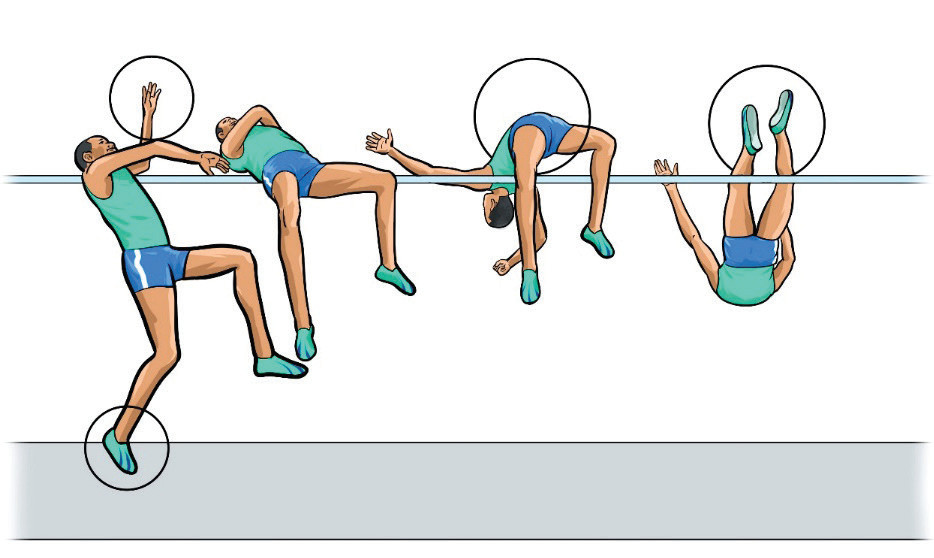

a
b
c
d
Figure 2.39: Bar clearance in high jump
Bar clearance technique in high jump
There are five techniques jumpers employ in clearing the bar in the high jump. The techniques include straddle, western roll, eastern cut-off with or without trunk layout, scissors and Fosbury flop. However, this section will cover scissors and Fosbury flop.
Scissor technique
This is the technique where the athlete clears the bar in a scissor shape mode. In clearing the bar using this style, the jumper lands with feet first. The following steps will help you practice the scissor bar clearance technique:
(i)
Run 8-10 steps from the cross-bar;
(ii)
Accelerate for the last few strides;
(iii)
Drive your leg near to and over the bar first;
(iv)
Keep your hips up while running tall;
(v)
Lift your legs in a scissors motion over the bar;
(vi)
Kick the leg close to the bar up in front of your body first, then follow the second leg; and
(vii)
Land on your feet on the mat, Figure 2.40.
SPORTS STUDIES FORM TWO.indd 68
9/17/25 9:54 AM